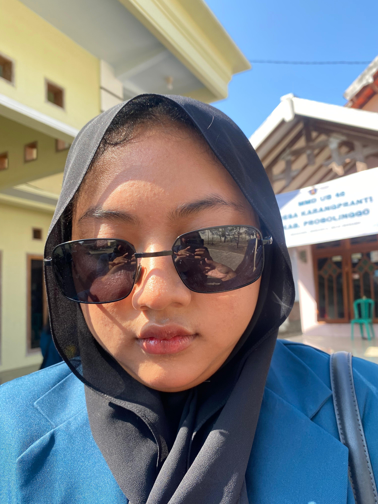
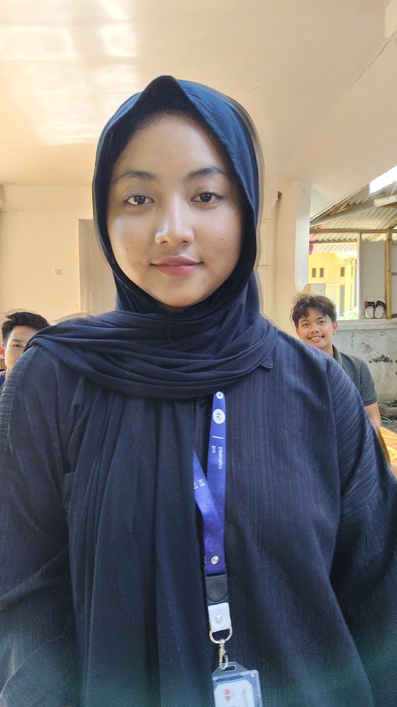
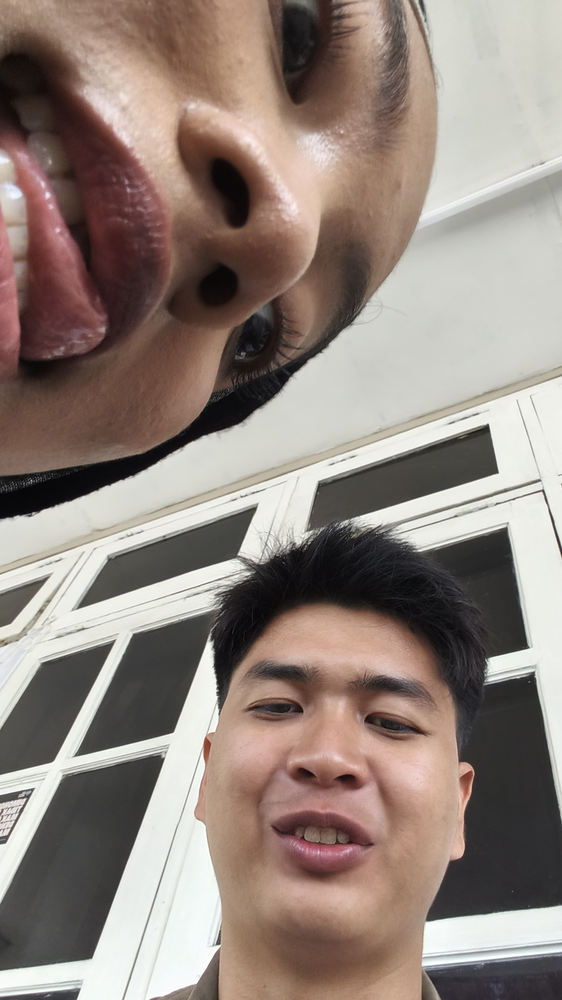
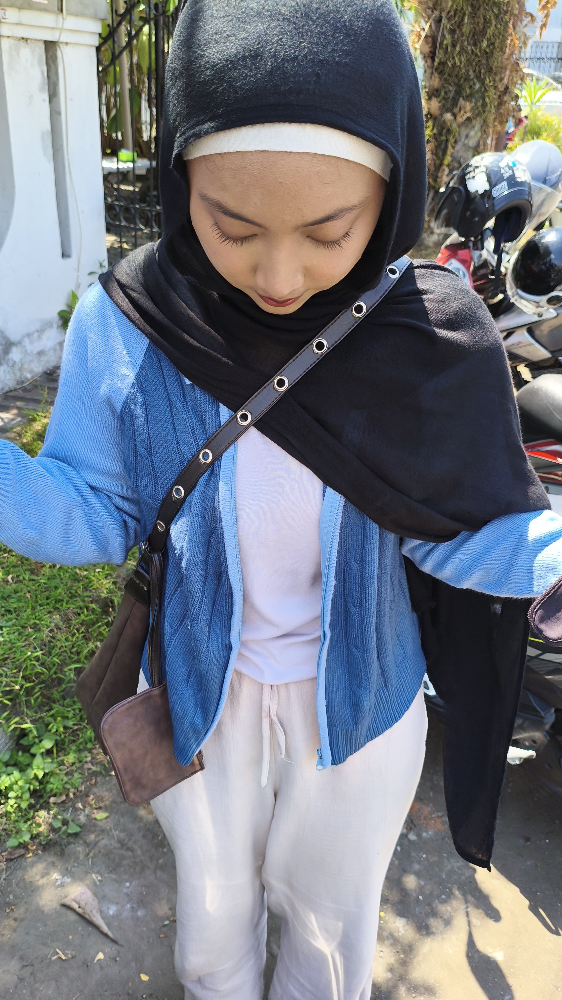
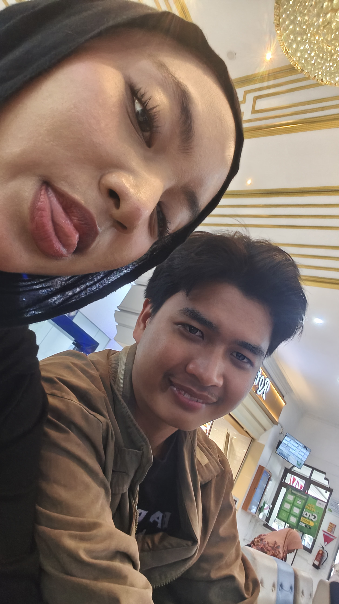
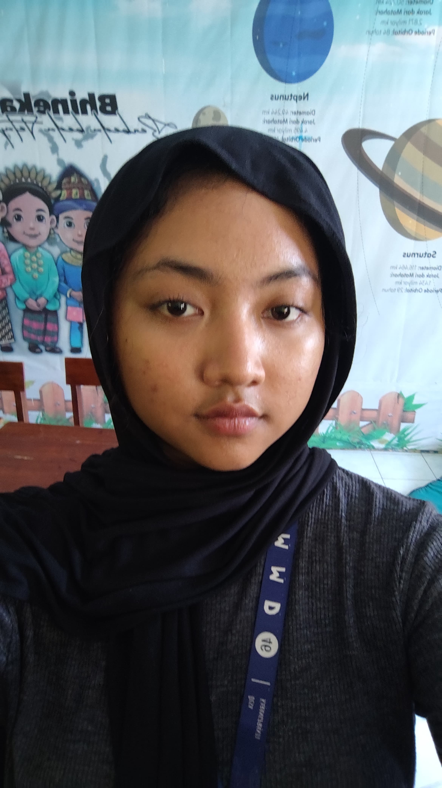

Untuk sosok perempuan inspiratif, pemimpi samudera, pemimpin yang hangat, dan seseorang yang selalu menghidupkan setiap ruang obrolan.
Inilah alasan mengapa begitu banyak orang yang mengagumi dan menghormati seorang Andin.
Selalu jadi penunjuk arah di lingkungan kampus maupun organisasi mahasiswa. Kepemimpinannya merangkul dan memberi semangat bagi teman-temannya.
Memiliki kecintaan mendalam pada dunia ilmu kelautan. Rasa ingin tahunya tinggi, selalu lapar akan ilmu baru dan aktif di berbagai komunitas.
Kreatif membuat obrolan jadi nyambung dan bermakna. Sosok yang hangat serta mudah dekat dengan siapa saja, baik teman maupun keluarga.

Senyum Terbaik ✨

Petualang Samudera 🌊

Mangan Terus 💡

Penuh Keceriaan 🌸

Usia 22 Yang Indah ❤️

Bocah Plenger ✨
"Selamat ulang tahun ke-22, Azfa Andina Putrie Nurliant! semoga setelah ultah yang ke 22 ini bisa jadi lebih baik dan bisa jadi contoh untuk adek nya serta bisa menjadi selayaknya anak pertama, see u on top! -R"